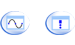
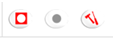
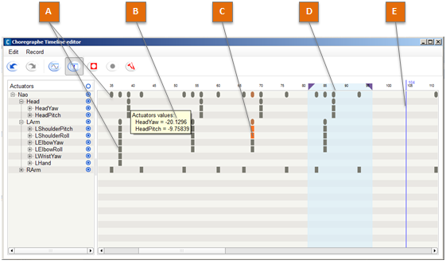
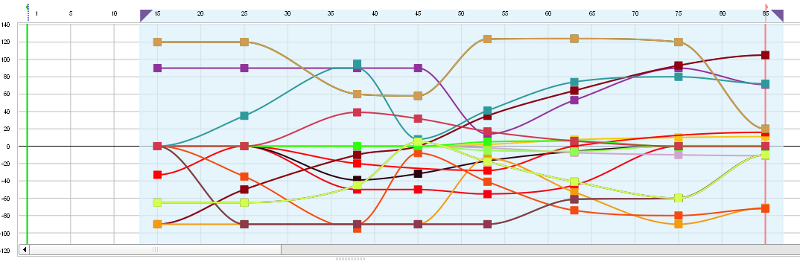
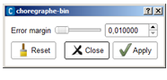
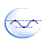
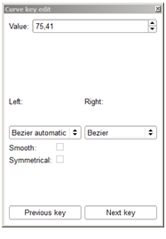

The Timeline Editor allows you to edit Motion layer, providing:
| Part | Buttons | Description |
|---|---|---|
| A | Undo and Redo |
Note that these buttons does not affect only the Timeline. They affect most of the actions you made in the behavior, even those which were out of the Timeline Editor. |
| B | Views  |
Allows you to switch between two views: |
| C | Record toolbar  |
Offers an advanced alternative to the Animation Mode. For further details see: Recording Mode. |
| D | Actuators panel | Displays the list of Joints and Groups of joints available for the current robot. For further details see: Actuators panel. |
The Actuators panel displays the list of Joints and Groups of joints corresponding to the robot type associated with the current Timeline.
Actions
| Click on ... | To ... |
|---|---|
| + / - | Expand / Collapse the group of joints. |
| a name | Select a Joint or a Group of joints. |
| a blue circle | Enable / Disable a joint or a group of joints. If the current Timeline has not been designed for the current robot, a error message appears. |
Meaning
| If the button is ... | joint or Group of joints is ... |
|---|---|
| Disabled. It will not be loaded nor executed. | |
| Enabled. |
To make sure the current Timeline is associated to the current robot:
| Step | Action |
|---|---|
| Right-click a frame in the grey Timeline. | |
If the command Associate motion curves to... is:
Result: the list of joints has been updated in order to fit with the current robot. |
The Worksheet mode displays a detailed view of the Motion ruler.
| Part | Name | Description |
|---|---|---|
| A | Motion keyframe | A Motion keyframe is represented by:
|
| B | Actuator values | If you keep the mouse on a Motion keyframe, a tooltip appears with the values of stored joints. |
| C | Selected Motion keyframe | A Motion keyframe gets:
Drag a selection rectangle to select several Motion keyframes, or Ctrl-Click them. |
| D | Selected range of frames | The range of frames is an alternative mode of selecting Motion keyframes. Drag the Frame numbers to create it. |
| E | Insertion point | Represented by a blue line, the insertion point allows to create or to paste Motion keyframes. |
All the function available in the Motion ruler are also available here.
Additional tool
To select all motion keyframes for a joint or a group of joint:
The Curves mode allows you to display curves representing the evolution of the values of the selected joint(s).
Each Motion keyframe is placed along the horizontal axis as in the Worksheet mode. But it is also placed along the vertical axis which represents the angle value of the joint.
Each joint is represented by a curve in a different color. You can:
| Part | Name | Click there to ... |
|---|---|---|
| A | Actuators | Select one or several joints to display. For further details, see: Actuators panel. |
| B | Color | Modify the color of a curve. |
| Part | Name | Allows you to ... |
|---|---|---|
| A | Interpolation modes | Set the interpolation modes of the selected Motion keyframe. For further details, see: List of interpolation modes. |
| B | Curve key edit | Display the Curve key edit widget. For further details, see: Curve key edit widget. |
| C | Simplify | Reduce the number of Motion keyframe in the curves and still keep a similar motion. For further details, see: Simplifying a movement. |
| D | Show tangents | Display (in blue) the automatic tangents of the curves. |
| E | View all | Adjust the zoom in order to fully display the selected curves. |
| F | Mode | Toggle between 3 modes: Selection, Zoom and Scroll. For further details, see: Selection, Zoom or Scroll Mode. |
In the Curves mode, you can Drag, Cut, Copy and paste Motion keyframes.
Simplify removes useless keys from selection:
| Step | Action |
|---|---|
Select a range of keyframes.  |
|
Click the Simplify button.  |
|
Choose an error margin and click the Apply button. Non relevant points are now transparent: they will be deleted if you accept the simplification. |
|
| If the result does not satisfy you, click the Reset button in order to cancel the current simplification. | |
| Click the Close button to validate the current state and close the window. |
Each Motion keyframe is linked with the previous and the next keyframe with interpolated curves.
For each Motion keyframe, the interpolation modes of the left and right curves can be adjusted.
To set the interpolation mode of a Motion keyframe:
| Step | Action |
|---|---|
| Select a Motion Keyframe. | |
Click one of the Interpolation modes button or Display the Curve key edit widget and set, value and left and right interpolation. |
|
| If a black line appears, drag its round handles to adjust the curve. |
| Constant: the value of the key is applied to the actuator up to the next keyframe. This won’t give smooth movements on the robot, but it can be used to implement “robotic movement” effects. | |
| Linear: the value is interpolated linearly toward the next key. | |
|  | Automatic Bezier: a Bezier curve interpolation is used, but the curve parameters are computed automatically by Choregraphe to give smooth and good looking movements. This is the default mode for new keyframes. In that mode, contrary to all other Bezier mode, the tangents of the curve at the key are not displayed by default. They can be shown by checking the “Show tangents” button (described below). Automatic tangents, when visible, are not editable, and are displayed in blue rather than black to distinguish them easily. |
| Bezier: this mode (and the following two) also implements a Bezier interpolation, but here the curve parameters are now adjustable by the user. Two tangent handles will appear next to the key to control the curve slope. | |
| Smooth: this is a Bezier mode too, but with an additional constraint, the two tangents of the key (on the left and on the right) must be aligned. Note however that if a key is only smooth on one of its side, the constraint won’t be enforced. | |
| Symmetrical: this is similar to the Smooth mode, with another constraint: the length of the two key tangents have relative sizes, so moving one not only keep the other aligned but also moves it horizontally to have an even smoother movement. Like the Smooth mode, the symmetry constraint will only be applied if both tangents are flagged symmetrical. |
Curve key edit widget allows you to set the key value and left and right interpolation modes.
When this button is checked, you are in the selection mode. Drawing a rectangle with a left mouse click will select a group of keys. |
|
When this button is checked, you are in the zoom area selection mode. Drawing a rectangle with a left mouse click will zoom the view so that it fits that rectangle. |
|
When this button is checked, you are in the viewport drag mode. In that mode, the mouse cursor becomes a hand. Dragging the cursor while pressing the left mouse button will scroll the view. |
| Button(s) | Function |
|---|---|
Activates and deactivates the Recording mode. For further details, see: Recording mode activated. |
|
Only enabled when the Recording mode is activated. Starts or stops the recording. Automatically activates the Animation mode. A recording can also stop by itself when it reaches the last frame. The recording will be done in the current range selection, or, if there is no such selection, between the start and the end frame of the current Timeline. |
|
Edit the recording settings. For further details, see: Motion recorder settings. |
| Name | Description |
|---|---|
| Mode | The way you record joint positions. You can choose between:
|
| Time step | Time elapsing between two stored keyframes. Indeed whatever the way you record joint positions, the keyframes created at each storage will be the same time step apart. |
| Allow timeline extension | If this option is unchecked, the recording will automatically stop when the end frame is encountered. If it is checked, the recording will continue as long as the user did not press the Stop button. In that case, the timeline contents after what was supposed to be the last frame will be “pushed” at the end of the recording. |
Whenever the recording mode is active, two additional columns appear in the table of the joints:
| Column | Description |
|---|---|
| If this option is activated, all the children joints of this joint will be recorded. | |
| If this option is activated, all the children joints of this joint will be played during the recording. |